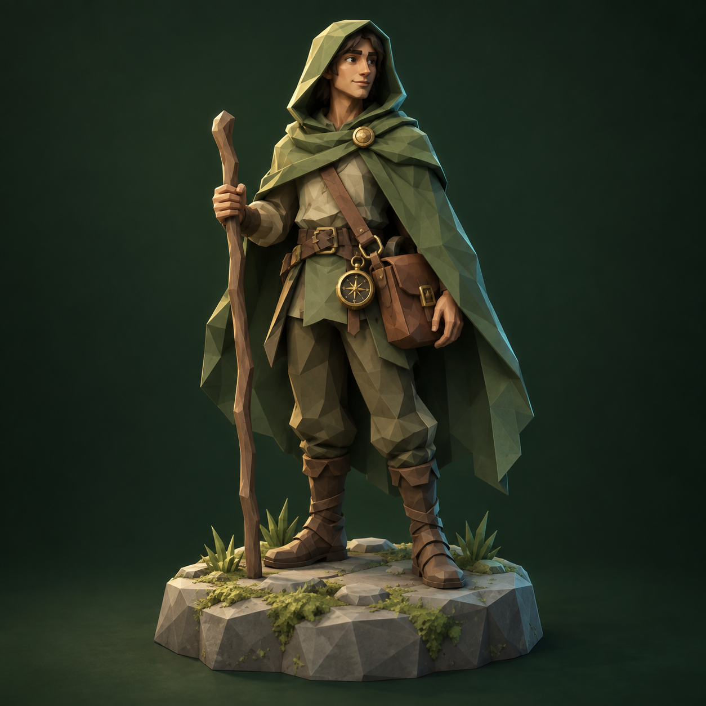
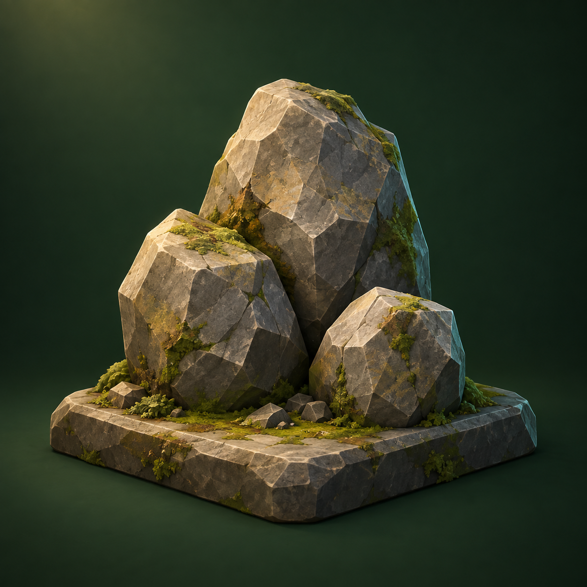
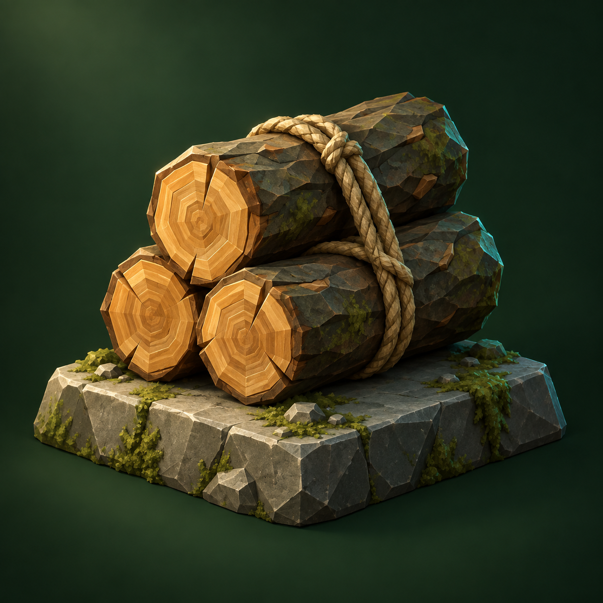
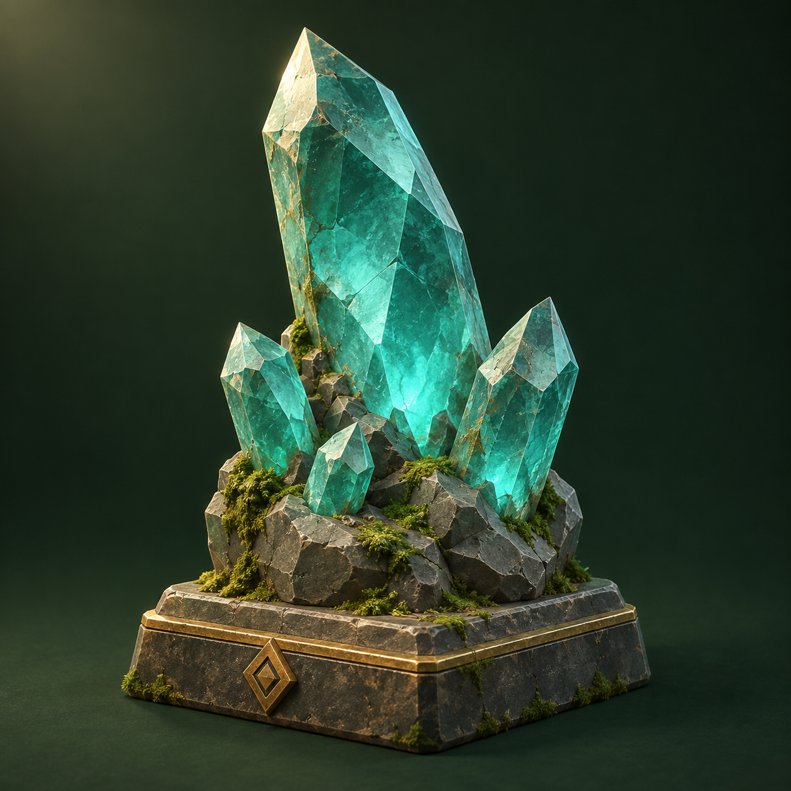
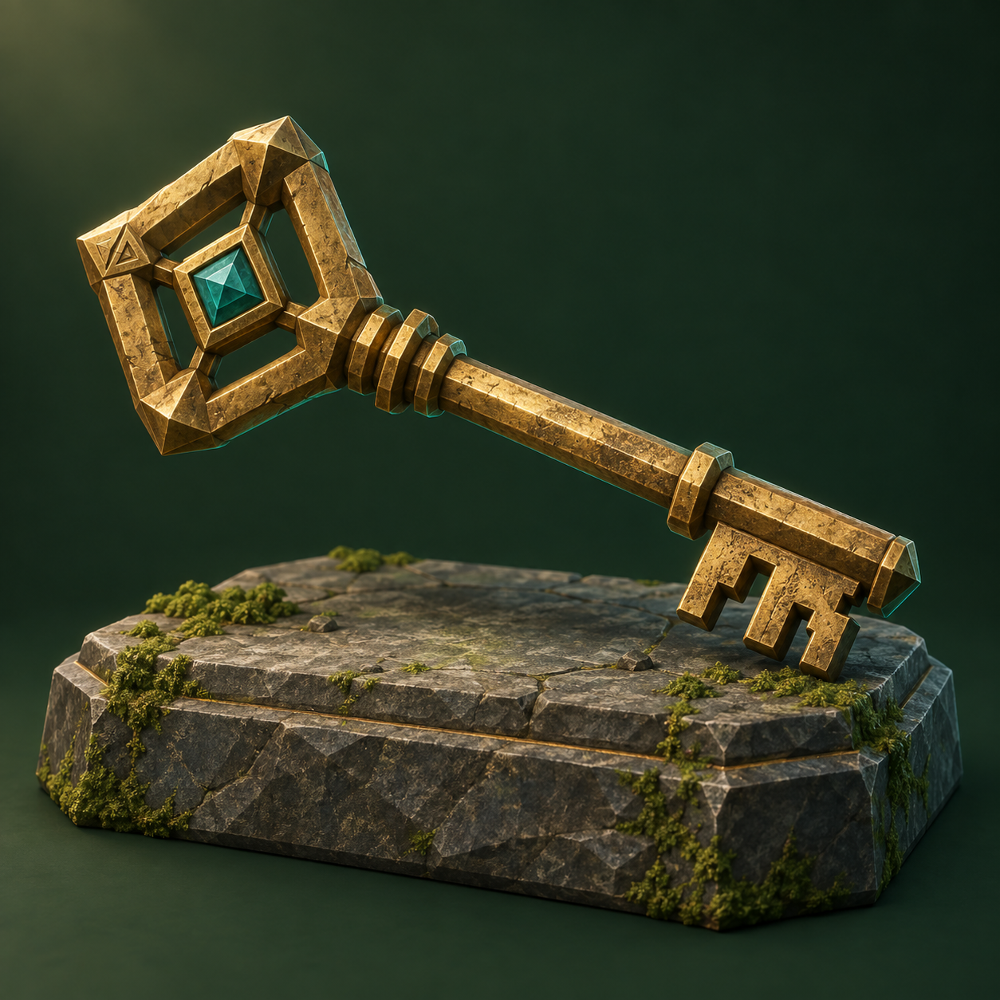
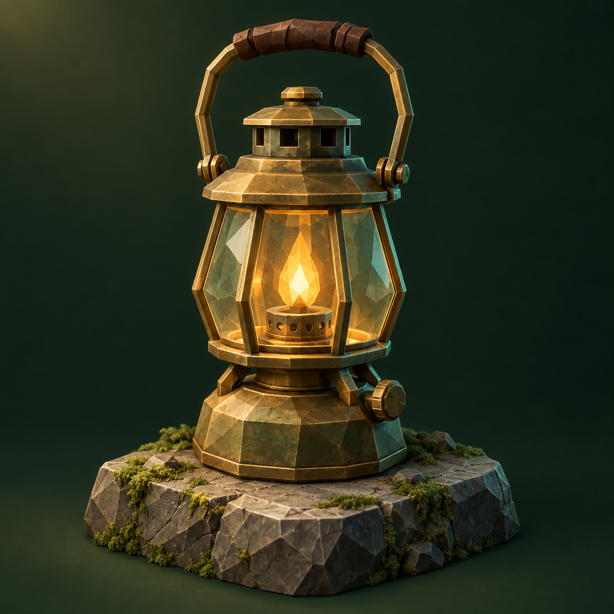
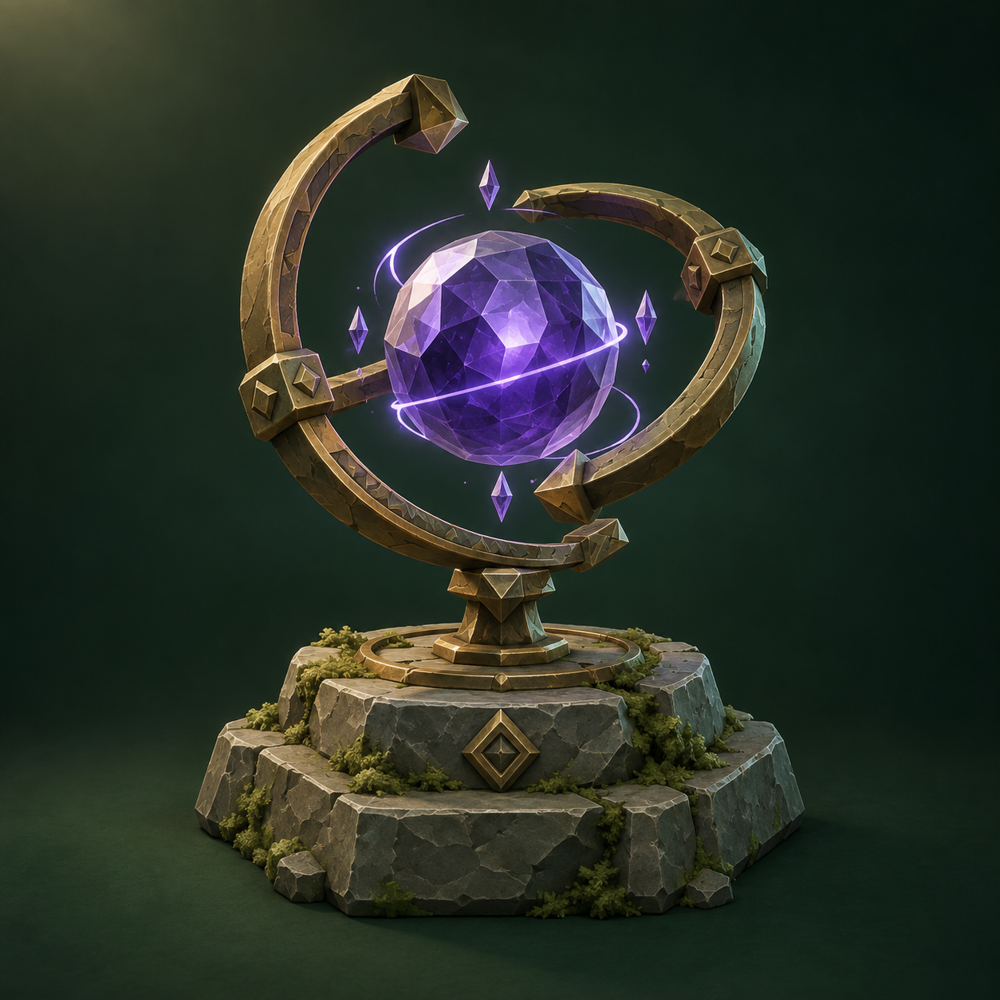

Objects from the world.
A first art set for Atlas Items and Atlas Characters. The six item images are connected to their hosted metadata. The character artwork is a concept asset: the existing character contract has immutable image-free metadata and cannot be updated to display this image.













